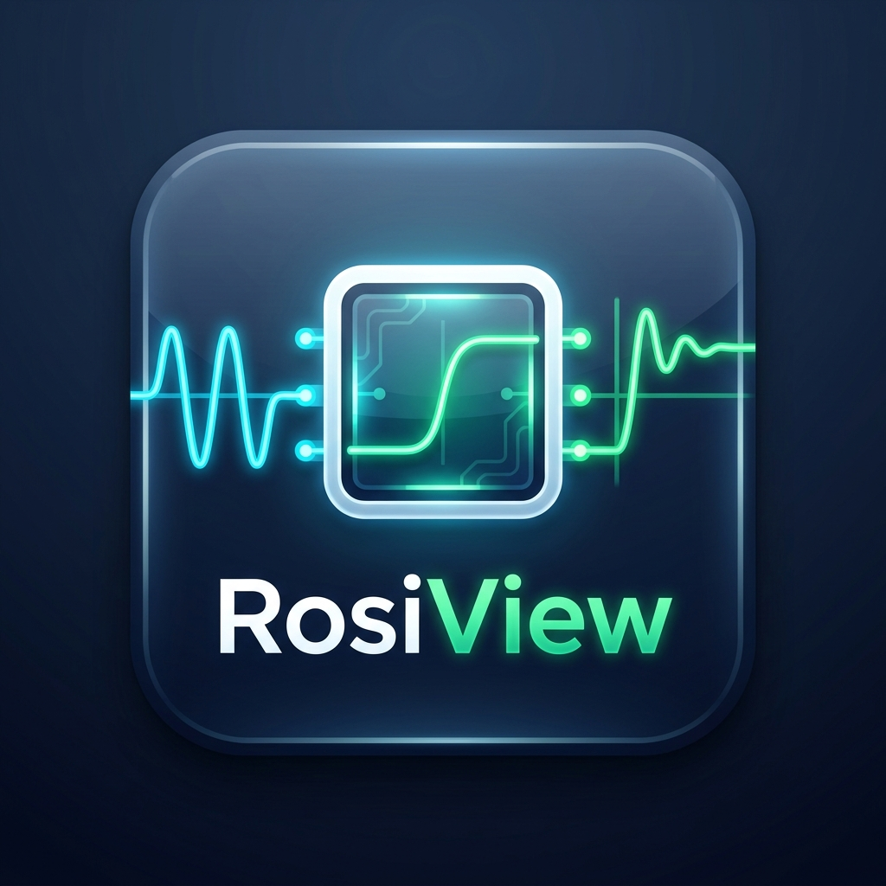

Há elementos no seu projeto atual. Se você iniciar um novo sem salvar, todas as alterações não salvas serão descartadas.
Baixe a versão atualizada diretamente do repositório no GitHub.
Execute o arquivo ATUALIZAR_ROSIVIEW.bat na pasta raiz para atualizar automaticamente.
ATUALIZAR_ROSIVIEW.bat